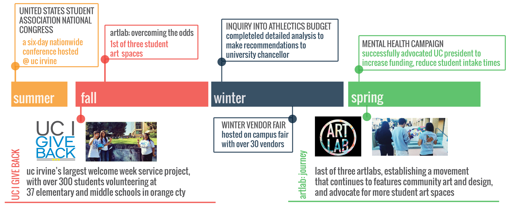

Introduction
- For one year I served as the elected representative for 23,000 undergraduates serving as the chief advocate for all matters impacting student life on campus, an effort that involved overseeing a portfolio of weekly, quarter and year long programs.
- As the Internal Vice President, I trained and supervised staff of 85+ students working on projects dedicated to improving student life including volunteerism, accessibility, wellness, conservation and other.
- Together with a team of four other executives, we created, balanced a yearly budget of approximately a $1.5 million for campus programming and advocacy projects.
- For this portfolio I will deal the effortd involved in the planning and coordination of key projects, including the creation and execution of "UC I Give Back", a large scale service event and artLab, an art and design space aimed at permanently installing student art across campus.

Program Context
- This retrofit involved the near complete overhaul of a Boeing 747-400 with over
four hundred seats in three classes all completed at a maintenance and operations facility in China.
To add the complexity of this project,
the customer requested to reuse some inflight entertainment for a select class of seats.
The entire project was completed in a compressed timeframe,
nearly half the normal alloated time from sale to delivery. This "short flow" necessitated
high degree of cross functional coordination between our project management team and manufacturing, engineering, software and installation groups.
- During this project, and at any given moment, I work on the management of at least
15 to 20 programs for Multiple European airlines, all at various stages of completion. During my time in program
management I have contributed to more than twenty-four programs, nearing thousand hours of project
management experience. As a Program Administrator, I work on a daily basis with a Program Manager
to oversee each component of a program. At each stage the Program Team
(Program Manager and Program Administrator) collaborate to move accomplish each stage.
Challenges
-
Working with my program manager while they were at the retrofit location in China, was a
significant challenge. Critical information was delayed by "one day,"by the time I received
the action and began work we were already behind by one working day. A hurdle compounded the
almost twenty-hour days, six-day a week schedule by which most retrofits are conducted.
-
Retrofit present an added challenge, in that most engineering work is done based on
existing drawing and documentation. A few time during installation a cable was found
to be time too short or a part was not created quite to specification. Recreating or
procuring a part that takes month to manufacture is no easy feat. Lastly, this was my
first Panasonic Program, I did not have the experience that would help in a short flow
retrofit like this one.
Lessons Learned
- For this project I was fortunate enough to work with an experienced program manager who had functional experience in engineering. Which allowed him to effectively communicate onsite issue and assist in their resolution. Demonstrating the importance of cross functional experience on a project team.
- During and after this project I realized the importance of learning how others work.
By this I mean not only the individual habits of your team, but understanding how your
supplier manufactures seats or what the dynamic of your software development work. This
type of understand can help prioritize your efforts and answers questions like:
- Can I leave this team relatively unattended to complete their work?
- Do we have build more time into the schedule considering past overruns?
- At the start of this program I had almost no experience with aviation program management, I was able to contribute and learn quickly by listening carefully and contributing only once I was able to speak with some authority regarding the on goings of the program.
Final Result
- This program was delivered on-time, the customer was satisfied with this end result. This aircraft continues to fly from Europe all around the world. Our program team followed this program with another retrofit with an additional eight aircraft.